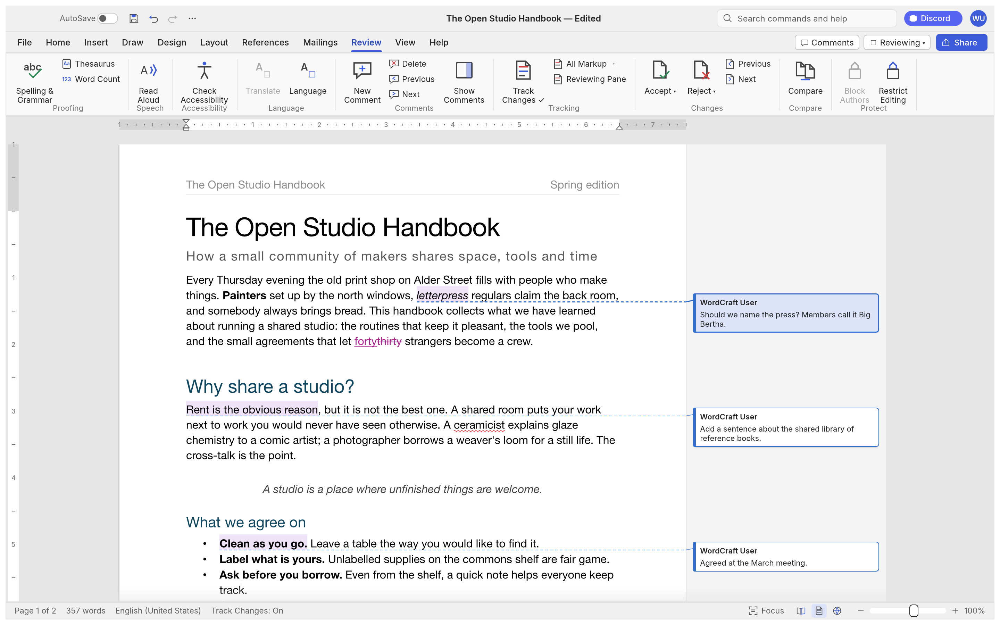
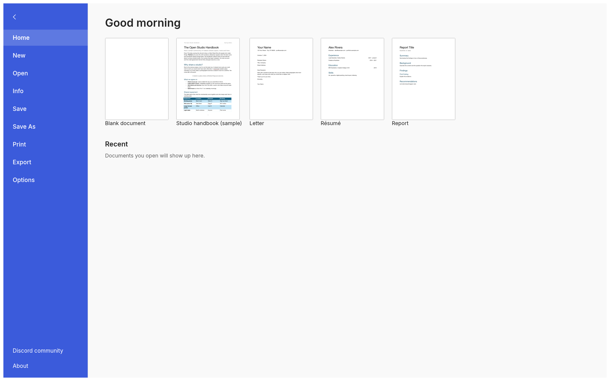

Write, review and refine without leaving the page
Track changes, margin comments, spelling and grammar as you type. Accept or reject edits one by one.
+ Add comment
The Open Studio Handbook
forty A fast, private word processor with the ribbon, styles, tables and track changes you already know. It opens and saves .docx, works offline, and runs on your tablet, in the browser and on the desktop.

Opens and saves the files you already have
Track changes, margin comments, spelling and grammar as you type. Accept or reject edits one by one.
Word's ribbon tabs, groups and shortcuts. Coverage of Word's ribbon features, measured on every build.
Spelling, grammar and everything else run on your device, with no account and no tracking. Paragraph layout is cached, so typing in a 188-page document re-lays it out in about 1.4 ms.
Read the code
No subscriptions, no account, no hidden fees. Wordpadx is open source under MIT or Apache-2.0.
Native app with the system file picker and Downloads export.
Download APKInstall from the browser as a full-screen app that works offline.
Install guidemacOS, Windows, Linux and BSD, natively on the GPU.
Build from source“Every action is a command with an id. The same commands drive the ribbon, keyboard shortcuts, a command-line tool and an MCP server, so people and agents edit documents the same way.”

Open, edit and export documents anywhere, anytime, even without a connection.
Download appEvery successful build is published as a release on GitHub.